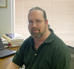

Dr. Dobb's Journal July 2007
Employer: Microsoft
Job: Knowledge Engineer
DDJ: What's your job at Microsoft?
EB: I work in a group that is responsible for improving engineering practices across the company. That involves course design, job aid construction, in-class instruction, team consulting, speaking, etc.
DDJ: What do you like about your job?
EB: Having an impact that can span across the company. I love seeing what is going on all over the company. Microsoft does a lot of things, so it is like seeing across the whole software industry.
DDJ: What do you find challenging about your job?
EB: I can actually have a really wide impact in some areas, but it sometimes takes time to see the pay off. Our group has no direct management authority. We influence rather than mandate.
DDJ: What have you found that makes your job easier?
EB: Each year we analyze the engineering knowledge and decide where we could improve. We set our goals for the year and set about to make a difference. There are so many great people in the company willing to speak up and help out along the way. Any request for help generates more volunteers than we need.
Employer: Laszlo Systems
Job: Cofounder and Lead Runtime Architect
DDJ: What's your job at Laszlo Systems?
MC: I'm a cofounder of Laszlo Systems, and currently Lead Runtime Architect for the OpenLaszlo group. I work on planning, architecture, and strategy for new runtimes, most recently our new Ajax runtime.
DDJ: What do you like about your job?
MC: I really love getting paid to work on open-source software—don't have to worry about my work being locked up in some IP vault. I can use it forever!
DDJ: What do you find challenging about your job?
MC: Probably the deadlines. We're competing against companies with more than ten times our budget and ten times the people, which means we work incredibly hard. It also means the results are incredibly satisfying. I'm convinced the best way to make quality software is with small teams of really smart people.
DDJ: What have you found that makes your job easier?
MC: Recently, my favorite tool is Firebug. It's just amazing for web development. It came along at just the right moment in the OpenLaszlo 4 release cycle—the profiler really helped fine-tune performance. I also love Ruby, Vim, Subversion, and OS X. OS X is an incredible development platform—the best desktop UNIX by far.
Employer: Carnegie Mellon Software Engineering Institute
Job: Research
DDJ: What's your job at CMU?
JS: Two-part answer. First, research into the programmatics of large, complex software-intensive systems of systems. Developing a theoretical foundation for—and understanding the relationships between—the various aspects of program management, system development, desired operational capability, etc., and how they impact mission effectiveness. Second, translating this research into concrete guidance.
DDJ: What do you like about your job?
JS: It's fun! I like working on a difficult problem with practical applications. We're in largely "uncharted waters" as far as developing an underlying theory to explain why some things work in systems of systems, and why others fail. At the same time, even small improvements can yield major rewards, so it is very satisfying when we see our work provide an immediate benefit for a customer.
DDJ: What do you find challenging about your job?
JS: The problem space is huge, and it is a challenge to maintain our focus on a tractable subset of the "big" problem. Another challenge is the customer's (understandable) reluctance to deviate from "tried and true" approaches that have worked in the past...even if only so-so. While we understand systems of systems don't simply perturb the programmatics of "traditional" system develop, but require fundamental, life-altering changes, that can be difficult for the customer to accept.
DDJ: What have you found that makes your job easier?
JS: A growing awareness on the part of our customers that the problem has fundamentally changed, leading to a greater willingness to explore new approaches. Also, we are no longer a "voice in the wilderness": there is a large—and growing—community of researchers in government, industry, and academia who have taken on this challenge, leading to significantly greater opportunities for collaboration.